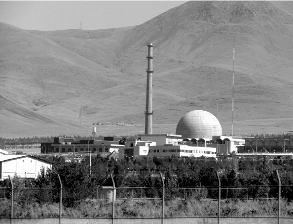

Bibi, Enough Babbling – Take Action!
A few weeks ago , the people of Eretz Yisroel commemorated forty years since the colossal catastrophe of the Yom Kippur War. Then, as today , there was a prime minister who relied too much on the United States. The day before the outbreak of hostilities , she rejected a call for a pre-emptive strike. The day after the war began, she declared that “ if we face a similar situation again, we must strike pre-emptively and not wait .”
Translated by Michoel Leib Dobry

The window of opportunity for the military option is rapidly closing. Just one year ago, the prime minister stood on the UN dais and presented his diagram of the Iranian bomb with the red line. Nothing has been done since. Neither the economic sanctions nor the diplomatic channel has slowed down Iran’s nuclear program.
The most troubling aspect to the Iranian question is the fact that the prime minister of Israel has transformed reliance upon the world community into a fundamental working premise. A few weeks ago, the people of Eretz Yisroel commemorated forty years since the terrible calamity of the Yom Kippur War. Then, as today, there was a prime minister who relied too much on the United States. The day before the outbreak of hostilities, she rejected a call for a pre-emptive strike to destroy the enemy’s military effectiveness. The day after the war began she declared that “if we face a similar situation again, we must strike pre-emptively and not wait.”
Yet, it seems that the incumbent prime minister hasn’t learned much from history. Every time we were convinced that the world at-large would stand up for us and not allow another senseless carnage – we were proven wrong. Anyone who lives in Eretz Yisroel knows this to be true. Virtually on a daily basis, we experience the madness of the security situation here. We have already gotten used to living under the threat of terrorism on the one hand, and with the constant defamation in the world press on the other. They regularly portray us as a cruel and oppressive people, when in fact we are the victims. The world has no shame nor does it show any pity. It continues to take a one-sided view of the situation, even after thousands have been murdered in terrorist attacks, striking young and old without mercy. Apparently, it will continue to brand us as the guilty ones, even while Iran continues its mad arms race towards nuclear capability.
The world is not the problem. It has always been against us. As Knesset Member Moshe Feiglin said last week, “The idea that we could rely upon the world fell by the wayside some seventy years ago during the Second World War, when thousands of Jews were being transported to the crematoriums every day, and the world remained silent.” The world hasn’t changed.
URANIUM ISN’T USED FOR MAKING POPCORN
We can now say that yet another ideology has lost its legitimacy: Zionism. Zionist leaders persistently maintain that the state of Israel was founded to make certain that we should never again be led as lambs to the slaughter. In the past, they explained, the Jew meekly stood alone against the world, unable to do a thing. Today, however, we finally have our own powerful armed forces to protect us against any potential enemy. In brief, this is the Zionist principle by which millions of Jewish children have been educated for the past sixty-five years. In recent days, this ideal has crumbled into oblivion. We do have a strong and effective military, but as the old saying goes, “It’s easier to take the Jew out of exile than to take the exile out of the Jew.” According to official Israeli policy, there’s no IDF and there’s no military option. Nothing exists as long as there’s no permission from Big Brother in Washington and the family of nations as a whole.
The Iranian problem had been placed on the table over a decade ago. The prime minister of Israel at the time was Ariel Sharon, who was busy destroying Jewish settlements and driving their residents out of their homes. Iran’s atomic program seemed to be nothing more than a temporary phase that would pass with time. However, as the years passed, the issue became more critical. The nuclear facility in Bushar began developing uranium, and as Cabinet Minister Naftali Bennett said, it isn’t for making popcorn. Yet, the People of Israel are still frightened. Just as they were on the eve of the Yom Kippur War, so they are today.
Very few people know what the Rebbe said in yechidus forty years ago to the late Yitzchak Rabin, during their first private meeting together. Mr. Rabin kept the nature of his discussion with the Rebbe confidential for the remainder of his life. There’s only one detail that would be appropriate to reveal: The Rebbe told Mr. Rabin that the state of Israel fights against the concept of being “a nation that will dwell alone, and will not be reckoned among the nations”. The future prime minister was very annoyed by this statement, which he considered to be a terrible insult.
The Rebbe’s words apply today no less than they did forty years ago. Once again, Moishke the Jew prostrates before the Gentile paritz in order that he should let him live. Instead of the Jewish pride in being “a nation that will dwell alone,” Israeli prime ministers try to join the family of nations at any price, even if the lives of millions of Jews are r”l placed in jeopardy along the way.
In a sicha delivered shortly after the Yom Kippur War (Shabbos Parshas Toldos 5734), the Rebbe said that “the Americans already thought that they wouldn’t be troubled anymore with Eretz Yisroel,” meaning that they were certain that the war would result in the annihilation of the Jewish presence in the Land of Israel and the end of sovereignty for the Jewish state. The Rebbe explained that the only thing bothering the United States was the possibility of a Soviet takeover in the region.
If we take a closer look at what was happening then, we find much similarity to the situation prevailing today. The Americans aren’t lifting a finger to advance serious measures that will pose a credible threat to the Iranian regime and put a halt to its nuclear program. The President of the United States is merely trying to curry favor with the leaders of the Islamic Republic of Iran, as if they are the class hot shots, while he is some “nerdy kid” trying to lickspittle to them. Obama is acting like a star-struck little boy who is blind to the great danger facing millions of Jews living in Eretz HaKodesh.
What’s most incredible is the conduct of the prime minister. How can Netanyahu continue to rely upon Obama, after seeing that the American president understands nothing about what’s happening in the Middle East and fails to stand behind his public statements? This is the same Obama who promised to attack Syria (another terror state), then backed down when the Nobel Peace Prize laureate realized that it would not be politically correct.
This is the same Obama who brought the “Moslem Brotherhood” to power in Egypt, while failing to understand that they were actually the representatives of radical Islam. The same Obama who quickly authorized the use of military force against Libya, where the issue was over Saudi Arabian oil, didn’t lift a finger to stop the bloodshed of hundreds and thousands of Syrian citizens during the last two years.
DOESN’T THE PRIME MINISTER LISTEN TO THE NEWS?
Here’s a glance at some risibly paradoxical news items reported during Chol HaMoed Sukkos:
Hundreds of IDF soldiers risked their lives in the streets of the Arab casbah in Chevron, in an attempt to capture the terrorist sniper who murdered Staff Sgt. Major Gal (Gavriel) Kobi, may G-d avenge his blood. Defense Minister Moshe Yaalon declared that the state of Israel will apprehend the killers and bring every terrorist to justice. The army chief of staff, Lt. Gen. Benny Gantz, promised the bereaved family that the Israel Defense Forces will do everything possible to catch this murderer and make him pay for his crime.
In Yerushalayim, negotiations continue on yet another release of terrorists convicted of acts of murder against Jews, as a goodwill gesture to the Palestinian Authority.
Sholom Ber Crombie. "Bibi, Enough Babbling – Take Action!." Beis Moshiach, no. 897 (October 8, 2013).